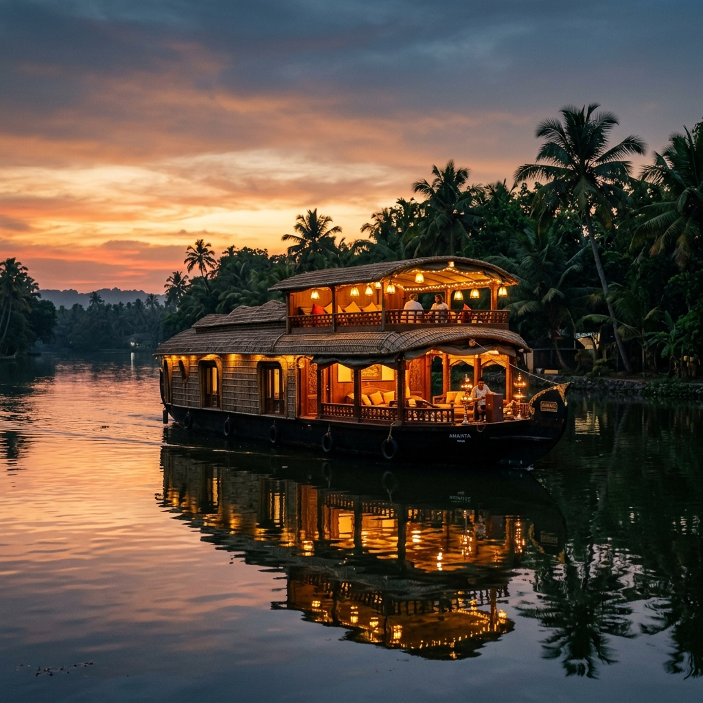

Best experienced October — February
No. I
Romantic Escapes
Kochi • Munnar • Kumarakom
Mist-covered tea hills, cascading waterfalls, and quiet lakeside serenity. A private sundowner overlooking the hills and sunset cruises on Kumarakom's backwaters.
5 Days / 4 Nights
Read
this chapter →